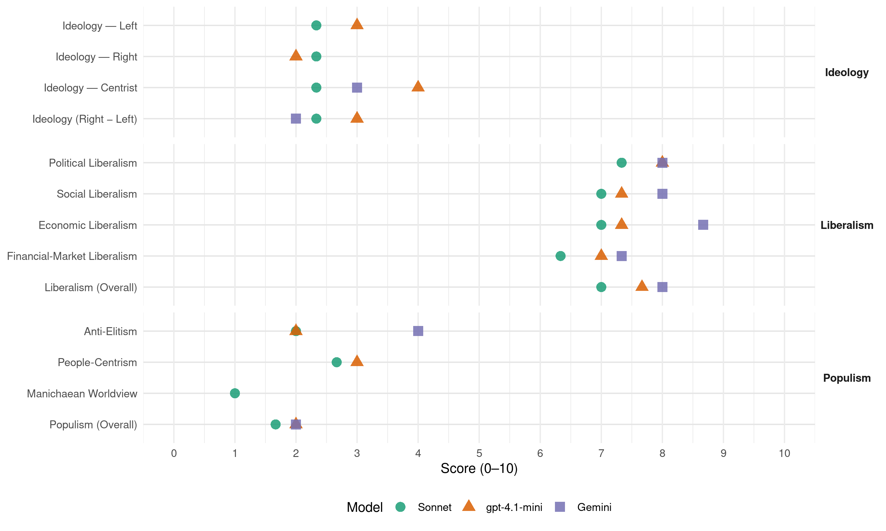

Nsi (Slovenia, 2008)
manifesto_id 97522_200809
Get full text: This site shows derived annotations and short verbatim quotes only. The full manifesto text is © Manifesto Project / WZB — obtain it via manifesto-project.wzb.eu using the manifesto_id above.
Headline scores
| Dimension | Sonnet | gpt-4.1-mini | Gemini |
|---|---|---|---|
| Populism (Overall) | 1.7 | 2.0 | 2.0 |
| Anti-Elitism | 2.0 | 2.0 | 4.0 |
| People-Centrism | 2.7 | 3.0 | – |
| Manichaean Worldview | 1.0 | – | – |
| Ideology (Right − Left) | 2.3 | 3.0 | 2.0 |
| Liberalism (Overall) | 7.0 | 7.7 | 8.0 |
| Political Liberalism | 7.3 | 8.0 | 8.0 |
| Social Liberalism | 7.0 | 7.3 | 8.0 |
| Economic Liberalism | 7.0 | 7.3 | 8.7 |
| Financial-Market Liberalism | 6.3 | 7.0 | 7.3 |
Evidence per dimension
Economic Liberalism
Gemini · score 9.0 · verified · chunk 1
“širjenje prostora za zasebno pobudo, ki je gonilna sila gospodarske rasti”
Javna poraba celotnega državnega sektorja je nižja za 4 %, kar pomeni širjenje prostora za zasebno pobudo, ki je gonilna sila gospodarske rasti. UVEDBA EVRA JE POMENILA NOV ZAGON
Gemini · score 9.0 · verified · chunk 2
“zasebna pobuda je edina prava gonilna sila”
Uspešnost, učinkovitost in gospodarnost morajo biti temeljna vodila pri pripravi proračuna Zasebna pobuda je edina prava gonilna sila razvoja omočiti ji moramo primerno
Gemini · score 8.0 · verified · chunk 3
“demokracija in socialno tržno gospodarstvo”
tržno gospodarstvo premagala kolektivizem in plansko gospodarstvo. Demokracija in socialno tržno gospodarstvo pa bosta živela le
gpt-4.1-mini · score 8.0 · verified · chunk 1
“postopna razbremenitev gospodarstva je v polnem teku z odpravo davka na izplačane plače”
Postopna razbremenitev gospodarstva je v polnem teku z odpravo davka na izplačane plače ter z zmanjševanjem stopenj davka na dobiček pravnih oseb; leta 2004 je bila še na višini 25 %.
gpt-4.1-mini · score 7.0 · verified · chunk 2
“Zavzemamo se za preglednost in gospodarnost na področju javnih financ”
…Nova Slovenija se bo še vnaprej zavzemala za preglednost in gospodarnost na področju javnih financ. Tako kot nam je v tem obdobju uspelo zmanjšati javno porabo za 4% BDP, se bomo zavzemali, da bo javna poraba rastla manj kot gospodarstvo samo.
gpt-4.1-mini · score 7.0 · verified · chunk 3
“razvili dinamično in konkurenčno gospodarstvo, ki bo temeljilo na znanju in raziskovanju”
…Da bi dosegli višjo gospodarsko rast in uresničili potenciale ter s tem ustvarili nova delovna mesta, bomo v skladu s smernicami Evropske zveze razvili dinamično in konkurenčno gospodarstvo, ki bo temeljilo na znanju in raziskovanju…
Sonnet · score 7.0 · verified · chunk 1
“znižanje davčnega bremena”
ukrepi vlade, predvsem prevzem evra ter znižanje davčnega bremena (postopna odprava davka na izplačane plače, znižanje stopnje davka na dobiček pravnih oseb)
Sonnet · score 7.0 · verified · chunk 2
“znižanje davčnega bremena”
ukrepi vlade, predvsem prevzem evra ter znižanje davčnega bremena (postopna odprava davka na izplačane plače, znižanje stopnje davka na dobiček pravnih oseb)
Sonnet · score 7.0 · verified · chunk 3
“svobodo podjetnosti odpira nova obzorja”
Svoboda podjetnosti odpira nova obzorja. Poskrbeli bomo, da bodo ljudje v samostojnih poklicih, obrtniki in podjetniki lahko svobodno sprejemali tržno ustrezne odločitve
Financial-Market Liberalism
Gemini · score 8.0 · verified · chunk 1
“pozitiven vpliv na razvoj kapitalskega trga”
preglednost vseh transakcij in s tem upoštevanje interesov in pravic vseh delničarjev ter doseganje najvišje možne prodajne cene in pozitiven vpliv na razvoj kapitalskega trga. OBČUTNO SO SE POVEČALA SREDSTVA
Gemini · score 7.0 · verified · chunk 2
“ustrezno zakonsko ureditev delovanja in nadzora trga kapitala”
zlasti za mlade družine oziroma za prvo pridobitev lastnega stanovanja. Zagotovili bomo ustrezno zakonsko ureditev delovanja in nadzora trga kapitala in po potrebi čim prej predlagali
Gemini · score 7.0 · verified · chunk 3
“zagotovili stanovitnost finančnega sistema”
gospodarske, institucionalne in družbene reforme, da bi zagotovili stanovitnost finančnega sistema. Slovenija potrebuje novo
gpt-4.1-mini · score 7.0 · verified · chunk 1
“Podpiramo način pregledne privatizacije - kot v primeru NKBM, kjer je bila prodaja 49-odstotnega državnega lastniškega deleža”
Podpiramo boj proti nepravilnostim, do katerih je prišlo v času privatizacije. Zagovarjamo način pregledne privatizacije - kot v primeru NKBM, kjer je bila prodaja 49-odstotnega državnega lastniškega deleža prvič izvedena po metodi prve javne ponudbe
gpt-4.1-mini · score 7.0 · verified · chunk 2
“zagotovili ustrezno zakonsko ureditev delovanja in nadzora trga kapitala”
…Zagotovili bomo ustrezno zakonsko ureditev delovanja in nadzora trga kapitala in po potrebi čim prej predlagali potrebne spremembe, da bi se zmanjšalo tveganje vseh udeležencev na trgu kapitala, zlasti malih delničarjev in malih varčevalcev v investicijskih skladih.
Sonnet · score 7.0 · verified · chunk 1
“Evro je olajšal dostop slovenskih podjetij do finančnih trgov”
Evro je olajšal dostop slovenskih podjetij do finančnih trgov in izboljšal njihovo likvidnost ter tako omogočil učinkovitejše razporejanje sredstev
Sonnet · score 6.0 · verified · chunk 2
“zmanjšalo tveganje vseh udeležencev na trgu kapitala”
Zagotovili bomo ustrezno zakonsko ureditev delovanja in nadzora trga kapitala in po potrebi čim prej predlagali potrebne spremembe, da bi se zmanjšalo tveganje vseh udeležencev na trgu kapitala, zlasti malih delničarjev
Sonnet · score 6.0 · verified · chunk 3
“zagotovili stanovitnost finančnega sistema”
vse nujne gospodarske, institucionalne in družbene reforme, da bi zagotovili stanovitnost finančnega sistema.
Political Liberalism
Gemini · score 8.0 · verified · chunk 1
“naredili vse, da se poveča zaupanje državljanov v pravno državo”
nadaljevali večanje učinkovitosti pravosodja naredili vse, da se poveča zaupanje državljanov v pravno državo, premagovanje in končanje sodnih zaostankov
Gemini · score 8.0 · verified · chunk 2
“zaupanje v obstoj”pravne države”“
življenje v vseh obdobjih življenja in vzbuja zaupanje v obstoj “pravne države”. Zagovarja tehnološki razvoj, vendar se
Gemini · score 8.0 · verified · chunk 3
“vladavina pravne države in enakost”
pravica do narodne samoodločbe; pravica do države; vladavina pravne države in enakost vseh ljudi pred zakonom
gpt-4.1-mini · score 8.0 · verified · chunk 1
“Zakon o varstvu pravice do sojenja brez nepotrebnega odlašanja smo omogočili sojenje v razumnem roku”
Zakon o varstvu pravice do sojenja brez nepotrebnega odlašanja smo omogočili sojenje v razumnem roku, državi pa prihranili 600 mio €. Zaradi prepočasnega sojenja pa smo zahtevke za odškodnine preusmerili na slovenska sodišča.
gpt-4.1-mini · score 8.0 · verified · chunk 2
“Zavzemamo se za dosledno spoštovanje v tem mandatu sprejetih sklepov”
…se bomo v prihodnjem mandatu zavzemali za dosledno spoštovanje v tem mandatu sprejetih sklepov, ki preprečujejo diskriminacijo žensk pri zaposlovanju, ter uresničenje določbe o enakem plačilu tudi v praksi. Še naprej se bomo zavzemali za lažje usklajevanje dela in družinskega življenja!
gpt-4.1-mini · score 8.0 · verified · chunk 3
“Vladavina pravne države in enakost vseh ljudi pred zakonom”
…pravica do narodne samoodločbe; vladavina pravne države in enakost vseh ljudi pred zakonom; država, ki naj služi človeku, obstaja zaradi človeka in bo porok za varovanje njegovih pravic…
Sonnet · score 8.0 · verified · chunk 1
“zaupanje državljanov v pravno državo”
ŽELIMO POVRNITI ZAUPANJE DRŽAVLJANOV V PRAVNO DRŽAVO Poleg odmevnega znižanja notarske tarife za polovico
Sonnet · score 7.0 · verified · chunk 2
“depolitizacijo in profesionalizacijo državnih uslužbencev”
Zavzemamo se za depolitizacijo in profesionalizacijo državnih uslužbencev. Pri njihovem napredovanju in zasedanju položajev bomo uveljavili objektivna merila
Sonnet · score 7.0 · verified · chunk 3
“načela svobode, demokracije in pravne države”
bo spoštovala osnovne človekove pravice in temeljne svoboščine, načela svobode, demokracije in pravne države ter vse vrednote
Liberalism (Overall)
Gemini · score 8.0 · verified · chunk 1
“širjenje prostora za zasebno pobudo, ki je gonilna sila gospodarske rasti”
Javna poraba celotnega državnega sektorja je nižja za 4 %, kar pomeni širjenje prostora za zasebno pobudo, ki je gonilna sila gospodarske rasti. UVEDBA EVRA JE POMENILA NOV ZAGON
Gemini · score 8.0 · verified · chunk 2
“zasebna pobuda je edina prava gonilna sila”
Uspešnost, učinkovitost in gospodarnost morajo biti temeljna vodila pri pripravi proračuna Zasebna pobuda je edina prava gonilna sila razvoja omočiti ji moramo primerno
Gemini · score 8.0 · verified · chunk 3
“demokracija in socialno tržno gospodarstvo”
tržno gospodarstvo premagala kolektivizem in plansko gospodarstvo. Demokracija in socialno tržno gospodarstvo pa bosta živela le
gpt-4.1-mini · score 8.0 · verified · chunk 1
“Zakon o varstvu pravice do sojenja brez nepotrebnega odlašanja smo omogočili sojenje v razumnem roku”
Zakon o varstvu pravice do sojenja brez nepotrebnega odlašanja smo omogočili sojenje v razumnem roku, državi pa prihranili 600 mio €. Zaradi prepočasnega sojenja pa smo zahtevke za odškodnine preusmerili na slovenska sodišča.
gpt-4.1-mini · score 8.0 · verified · chunk 2
“Zavzemamo se za dosledno spoštovanje v tem mandatu sprejetih sklepov”
…se bomo v prihodnjem mandatu zavzemali za dosledno spoštovanje v tem mandatu sprejetih sklepov, ki preprečujejo diskriminacijo žensk pri zaposlovanju, ter uresničenje določbe o enakem plačilu tudi v praksi. Še naprej se bomo zavzemali za lažje usklajevanje dela in družinskega življenja!
gpt-4.1-mini · score 7.0 · verified · chunk 3
“Vladavina pravne države in enakost vseh ljudi pred zakonom”
…pravica do narodne samoodločbe; vladavina pravne države in enakost vseh ljudi pred zakonom; država, ki naj služi človeku, obstaja zaradi človeka in bo porok za varovanje njegovih pravic…
Sonnet · score 7.0 · verified · chunk 1
“širjenje prostora za zasebno pobudo”
Javna poraba celotnega državnega sektorja je nižja za 4 %, kar pomeni širjenje prostora za zasebno pobudo, ki je gonilna sila gospodarske rasti
Sonnet · score 7.0 · verified · chunk 2
“zasebna pobuda je edina prava gonilna sila”
Zasebna pobuda je edina prava gonilna sila razvoja - omogočiti ji moramo primerno vzpodbudno okolje!
Sonnet · score 7.0 · verified · chunk 3
“načela svobode, demokracije in pravne države”
bo spoštovala osnovne človekove pravice in temeljne svoboščine, načela svobode, demokracije in pravne države ter vse vrednote
Anti-Elitism
Gemini · score 4.0 · verified · chunk 1
“Podpiramo boj proti nepravilnostim, do katerih je prišlo v času privatizacije.”
podprli osnutek pokrajinske zakonodaje, saj smo prepričani, da možnosti državljanov ne smejo biti pogojene s krajem stalnega prebivališča. PODPIRAMO JASNO PRIVATIZACIJO Podpiramo boj proti nepravilnostim, do katerih je prišlo v času privatizacije. Zagovarjamo način pregledne privatizacije - kot v primeru NKBM
gpt-4.1-mini · score 2.0 · verified · chunk 1
“Podpiramo boj proti nepravilnostim, do katerih je prišlo v času privatizacije”
Podpiramo boj proti nepravilnostim, do katerih je prišlo v času privatizacije. Zagovarjamo način pregledne privatizacije - kot v primeru NKBM, kjer je bila prodaja 49-odstotnega državnega lastniškega deleža prvič izvedena po metodi prve javne ponudbe
Sonnet · score 1.0 · mixed · chunk 1
“boj proti nepravilnostim, do katerih je prišlo”
Podpiramo boj proti nepravilnostim, do katerih je prišlo v času privatizacije. Zagovarjamo način pregledne privatizacije
Sonnet · score 2.0 · verified · chunk 2
“ne pa na podlagi političnih odločitev”
Veliki gospodarski kompleksi naj nastajajo spontano, na podlagi racionalizacije in ekonomske učinkovitosti, ne pa na podlagi političnih odločitev.
Sonnet · score 2.0 · verified · chunk 3
“brez privilegijev, podkupljivosti, nepotizma in klientelizma”
ureditev, ki ponuja enake možnosti in enake pravice za vse, brez privilegijev, podkupljivosti, nepotizma in klientelizma. Le v takšnem sistemu
Ideology — Centrist
Gemini · score 3.0 · verified · chunk 1
“Podpiramo boj proti nepravilnostim, do katerih je prišlo v času privatizacije.”
podprli osnutek pokrajinske zakonodaje, saj smo prepričani, da možnosti državljanov ne smejo biti pogojene s krajem stalnega prebivališča. PODPIRAMO JASNO PRIVATIZACIJO Podpiramo boj proti nepravilnostim, do katerih je prišlo v času privatizacije. Zagovarjamo način pregledne privatizacije - kot v primeru NKBM
gpt-4.1-mini · score 4.0 · verified · chunk 1
“državo, ki predstavlja trdnega partnerja Evropske zvere in jasno zagovarja svoje interese”
…državo, ki raste in se razvija v sodobno evropska gospodarstvo… Državo, ki predstavlja trdnega partnerja Evropske zvere in jasno zagovarja svoje interese v povezavah, katerih članica je; Državo, ki spodbuja uspešen razvoj lokalnih skupnosti
Sonnet · score 2.0 · verified · chunk 1
“pregledno in varčno porabo denarja davkoplačevalcev”
zahtevali pregledno in varčno porabo denarja davkoplačevalcev od ministrstev do javnih zavodov
Sonnet · score 3.0 · verified · chunk 2
“inovativna družba s podjetnimi državljani”
Naš cilj je inovativna družba s podjetnimi državljani.
Sonnet · score 2.0 · verified · chunk 3
“enake možnosti in enake pravice za vse”
ureditev, ki ponuja enake možnosti in enake pravice za vse, brez privilegijev, podkupljivosti
Ideology — Left
gpt-4.1-mini · score 3.0 · verified · chunk 1
“postopna razbremenitev gospodarstva je v polnem teku z odpravo davka na izplačane plače”
Postopna razbremenitev gospodarstva je v polnem teku z odpravo davka na izplačane plače ter z zmanjševanjem stopenj davka na dobiček pravnih oseb; leta 2004 je bila še na višini 25 %.
Sonnet · score 3.0 · verified · chunk 1
“Delavci morajo biti deležni nagrad ob dobičku”
Delavci morajo biti deležni nagrad ob dobičku podjetja, veseli nas, da smo v tem mandatu za to sprejeli zakonsko podlago
Sonnet · score 2.0 · verified · chunk 2
“dvig minimalne plače”
Zavzemali se bomo za dvig minimalne plače na takšno raven, da bo očitna razlika med prihodki posameznika
Sonnet · score 2.0 · verified · chunk 3
“solidarnost močnih in slabotnih, bogatih in revnih”
sistem socialne varnosti temeljil na solidarnosti močnih in slabotnih, bogatih in revnih, zdravih in bolnih
Ideology (Right − Left)
Gemini · score 2.0 · verified · chunk 1
“Podpiramo boj proti nepravilnostim, do katerih je prišlo v času privatizacije.”
podprli osnutek pokrajinske zakonodaje, saj smo prepričani, da možnosti državljanov ne smejo biti pogojene s krajem stalnega prebivališča. PODPIRAMO JASNO PRIVATIZACIJO Podpiramo boj proti nepravilnostim, do katerih je prišlo v času privatizacije. Zagovarjamo način pregledne privatizacije - kot v primeru NKBM
gpt-4.1-mini · score 3.0 · verified · chunk 1
“Podpiramo boj proti nepravilnostim, do katerih je prišlo v času privatizacije”
Podpiramo boj proti nepravilnostim, do katerih je prišlo v času privatizacije. Zagovarjamo način pregledne privatizacije - kot v primeru NKBM, kjer je bila prodaja 49-odstotnega državnega lastniškega deleža prvič izvedena po metodi prve javne ponudbe
Sonnet · score 2.0 · verified · chunk 1
“Podpiramo inovativnost in podjetnost”
Država mora preprečevati monopolno delovanje. Zagovarjamo pravični model lastninjenja po vzoru NKBM. Podpiramo inovativnost in podjetnost.
Sonnet · score 2.0 · verified · chunk 2
“zasebna pobuda je edina prava gonilna sila”
Zasebna pobuda je edina prava gonilna sila razvoja - omogočiti ji moramo primerno vzpodbudno okolje!
Sonnet · score 3.0 · verified · chunk 3
“slovensko narodno in jezikovno samobitnost”
Med kulturnimi vrednotami NSi posebej poudarja slovensko narodno in jezikovno samobitnost in zavest o zgodovinski rasti
Ideology — Right
gpt-4.1-mini · score 2.0 · verified · chunk 1
“državo, ki ob odprtosti za medkulturni dialog poudarja ohranjanje naše samobitnosti”
državo, ki ob odprtosti za medkulturni dialog poudarja ohranjanje naše samobitnosti ter uveljavljanje in razvoj slovenskega jezika na vseh tradicionalnih in novih področjih
Sonnet · score 1.0 · verified · chunk 1
“jasnejših meril za pridobitev delovnega dovoljenja”
prinesli sta novosti glede jasnejših meril za pridobitev delovnega dovoljenja, možnost zaposlitve po izteku sezonskega dela
Sonnet · score 2.0 · verified · chunk 2
“domovinska vzgoja”
Pomemben del izobraževalnega sistema mora biti domovinska vzgoja.
Sonnet · score 4.0 · verified · chunk 3
“slovensko narodno in jezikovno samobitnost”
Med kulturnimi vrednotami NSi posebej poudarja slovensko narodno in jezikovno samobitnost in zavest o zgodovinski rasti
Manichaean Worldview
Sonnet · score 1.0 · verified · chunk 1
“KONČALI SMO OBDOBJE”NEDOTAKLJIVIH”“
KONČALI SMO OBDOBJE “NEDOTAKLJIVIH” S spremembo zakonodaje je bil pri Vrhovnem državnem tožilstvu ustanovljen specializiran oddelek
Sonnet · score 1.0 · verified · chunk 2
“preprečiti in odpraviti korupcijo v državni upravi”
sankcioniranju kršitev pravil javnega naročanja, da bi preprečili in odpravili korupcijo v državni upravi in celotnem javnem sektorju
Sonnet · score 1.0 · verified · chunk 3
“demokracija in tržno gospodarstvo premagala kolektivizem”
Na Slovenskem sta demokracija in tržno gospodarstvo premagala kolektivizem in plansko gospodarstvo.
People-Centrism
gpt-4.1-mini · score 3.0 · verified · chunk 1
“državo, ki predstavlja trdnega partnerja Evropske zvere in jasno zagovarja svoje interese”
…državo, ki raste in se razvija v sodobno evropska gospodarstvo… Državo, ki predstavlja trdnega partnerja Evropske zvere in jasno zagovarja svoje interese v povezavah, katerih članica je; Državo, ki spodbuja uspešen razvoj lokalnih skupnosti
Sonnet · score 2.0 · verified · chunk 1
“vsakdo za svoje delo prejme pošteno plačilo”
okrepili prizadevanje, da vsakdo za svoje delo prejme pošteno plačilo Minimalna plača mora zagotavljati dostojno preživetje
Sonnet · score 3.0 · verified · chunk 2
“uradništvo je servis za državljane”
Zapletene postopke ter delovanje počasne in neproduktivne državne uprave je treba zakonsko urediti z jasnimi določbami: uradništvo je servis za državljane in mora delati v njihovem interesu
Sonnet · score 3.0 · verified · chunk 3
“Slovenija piše zgodbo uspeha … nadaljujmo jo skupaj”
Slovenija piše zgodbo uspeha … nadaljujmo jo skupaj za še boljšo Slovenija
Populism (Overall)
Gemini · score 2.0 · verified · chunk 1
“Podpiramo boj proti nepravilnostim, do katerih je prišlo v času privatizacije.”
podprli osnutek pokrajinske zakonodaje, saj smo prepričani, da možnosti državljanov ne smejo biti pogojene s krajem stalnega prebivališča. PODPIRAMO JASNO PRIVATIZACIJO Podpiramo boj proti nepravilnostim, do katerih je prišlo v času privatizacije. Zagovarjamo način pregledne privatizacije - kot v primeru NKBM
gpt-4.1-mini · score 2.0 · verified · chunk 1
“Podpiramo boj proti nepravilnostim, do katerih je prišlo v času privatizacije”
Podpiramo boj proti nepravilnostim, do katerih je prišlo v času privatizacije. Zagovarjamo način pregledne privatizacije - kot v primeru NKBM, kjer je bila prodaja 49-odstotnega državnega lastniškega deleža prvič izvedena po metodi prve javne ponudbe
Sonnet · score 1.0 · verified · chunk 1
“vsakdo za svoje delo prejme pošteno plačilo”
okrepili prizadevanje, da vsakdo za svoje delo prejme pošteno plačilo Minimalna plača mora zagotavljati dostojno preživetje
Sonnet · score 2.0 · verified · chunk 2
“zasebna pobuda je edina prava gonilna sila”
Zasebna pobuda je edina prava gonilna sila razvoja - omogočiti ji moramo primerno vzpodbudno okolje!
Sonnet · score 2.0 · verified · chunk 3
“brez privilegijev, podkupljivosti, nepotizma in klientelizma”
ureditev, ki ponuja enake možnosti in enake pravice za vse, brez privilegijev, podkupljivosti, nepotizma in klientelizma.
Social Liberalism